PiOne Testmate — Autonomous Enterprise Web QA Platform
AI-Driven Autonomous Discovery, Low-Impact DAST Security, & Deterministic Playwright Automation
Zero-Script Setup
Autonomous SPA & SSR route discovery without writing fragile manual selector scripts. Cut test authoring cycles from weeks to minutes.
Production-Safe DAST
Passive OWASP Top 10 security auditing across discovered routes. Detects CSP, HSTS, cookie flag, and unauth access flaws without destructive payloads.
Enterprise Resilience
SQLite / PostgreSQL relational persistence, safe checkpoint resume, visual regression baselines, and multi-provider AI model freedom.
The Enterprise Web QA Dilemma
Why traditional automation and black-box AI tools fail mission-critical engineering teams
Fragile Script Maintenance
Teams spend 40% to 60% of their test sprints repairing broken XPath and CSS locators. Minor UI redesigns silently break test suites, delaying deployments.
Destructive AI Bots
Unbounded autonomous agents inadvertently click delete buttons, cancel accounts, or submit orders. Lack of safety controls leads to enterprise security bans.
The PiOne Solution
Deterministic Playwright scanner first, grounded AI test planning second. Human-in-the-loop parking lot enclaves isolate destructive operations completely.
Core Philosophy & Enterprise Value Pillars
Deterministic browser automation governed by human checkpoints and grounded AI intelligence
SSRF Guardrails
Target origin allowlisting and strict network blocking of private IP ranges (10.0.0.0/8, 127.0.0.1, 169.254.169.254).
12-Attr Fingerprint
Multi-attribute selector scoring (Role > ARIA > ID > Text > CSS > XPath) guaranteeing self-healing locator resilience.
Safety Parking Lot
Dangerous keywords (delete, cancel, reset, buy) quarantined into a governance review list requiring human sign-off.
Session Renewal
Expired sessions are renewed via /session/refresh without dropping discovered route graphs, checkpoints, or active runs.
Unified System Architecture Blueprint
4-Tier enterprise deployment model guaranteeing durability, isolation, and speed
Tier 1
Presentation & UI
Tailwind CSS SPA with 8-step responsive stepper, persistent active-run HUD bar, live WebSocket dual-transport, and visual diff viewer.
Tier 2
FastAPI Gateway
Asynchronous endpoints for /scan, /scan/control, /runs/{id}/security passive DAST, multi-provider LLM gateway, and high-speed test execution.
Tier 3
Automation Core
Playwright engine, SecurityGuard SSRF defense, ViewportDeepScanner with 12-attr scoring, ActionClassifier safety gate, and session key store.
Tier 4
Durable Persistence
SQLAlchemy relational ORM (SQLite / PostgreSQL), JSON run context synchronizer, 10-sheet Excel audit workbooks, and JUnit XML/HTML reports.
The End-to-End 8-Step Testing Lifecycle
Structured, deterministic pipeline ensuring full enterprise auditability at every transition
Scan Application
Target specification, credentials containment, and initial SPA/SSR probe.
Choose Modules
Semantic clustering of discovered paths into testable functional domains.
Manual Review
Human-in-the-loop governance isolating destructive verbs in Parking Lot.
Crawl Telemetry
Deep sequential traversal with sub-second WebSocket telemetry HUD.
Analyze Routes
Route health classification (Working/Partial/Non-Working) & element map.
Security DAST
Passive OWASP Top 10 auditing (CSP, HSTS, cookie flags, unauth access).
Generate Tests
Multi-provider AI planning gateway emitting clean standalone pytest code.
Execute Tests
Controlled headless/headed runner with per-step live assertion streaming.
Scan Application & Session Lifecycle Management
High-fidelity entry point supporting credentialed and public environments with strict session isolation
- ✓Target Origin Isolation: All crawling strictly bounded to target domain; prevents SSRF and offsite crawling.
- ✓Opaque Auth Storage: Storage state encrypted under
reports/auth_sessions/<uuid>.json; zero token leakage. - ✓One-Click Offline Demo: Fully functional mock mode enabling reliable air-gapped evaluation.
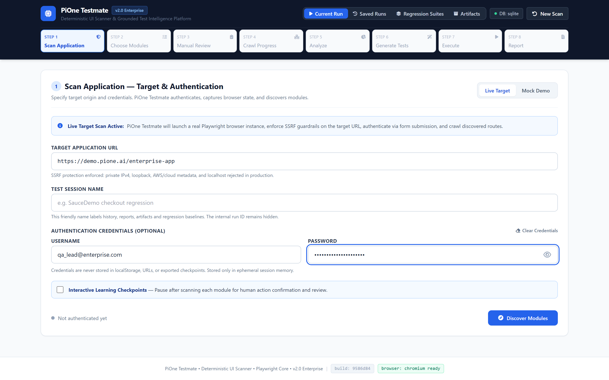
Intelligent Module Discovery & Boundary Isolation
Autonomous clustering of application routes into discrete, testable operational domains
- ✓Semantic Route Clustering: Auto-groups pages into functional clusters (Inventory, Cart, Checkout, Settings).
- ✓Granular Checkbox Scoping: Select all or targeted subsets with real-time route count indicators.
- ✓Stale Run Invalidation: Changing modules transparently flags downstream test suites as needing regeneration.
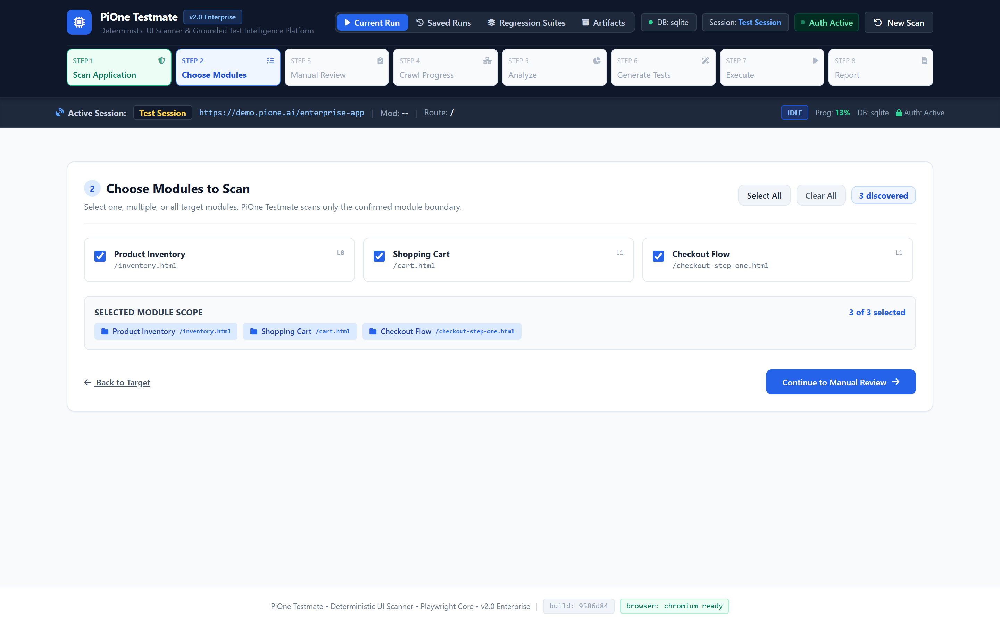
Interactive Manual Review & Safety Enclaves
Pre-crawl human governance gate isolating high-risk interactions and external redirects
- ✓Automated Risk Heuristics: Flags destructive keywords (
delete,reset,purchase,logout). - ✓Parking-Lot Enclave: Quarantine questionable routes for explicit human clearance or omission.
- ✓Custom Route Ingestion: Add deep operational URIs directly before deep crawling begins.
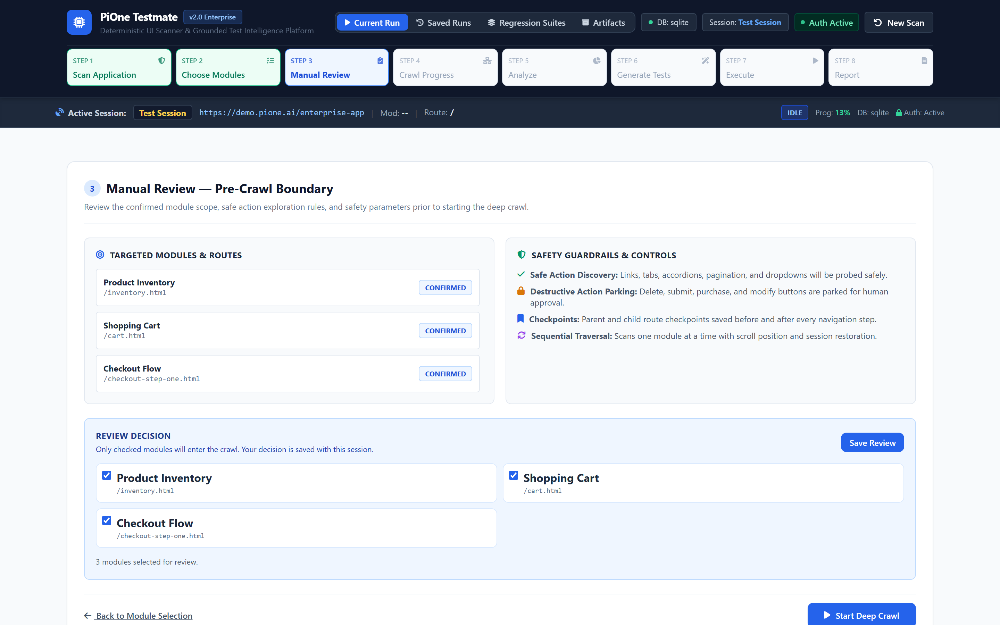
Real-Time Crawl Telemetry & Bounded Exploration
Sub-second streaming progress, network interception, and route-level safety limits
- ✓Persistent Active Run Bar: Global HUD displays run ID, active route, progress %, and db health.
- ✓Terminal State Protection: Completed scans lock controls and activate "View Analysis" explicitly.
- ✓Crash-Resilient State: Telemetry stored continuously; refresh or browser crash resumes seamlessly.
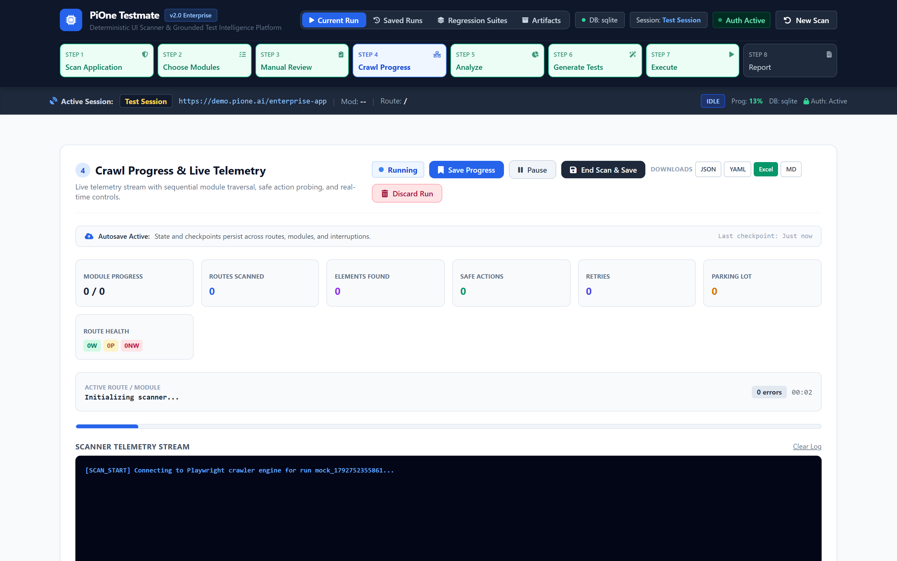
Route Health Catalog & Classification Engine
Autonomous health derivation and interactive element inspection across all discovered pages
- ✓Normalized Health Taxonomy: Working, Partial, Non-Working status derived from actual page responses.
- ✓Element Density Graph: Catalogs interactive buttons, inputs, links, forms, and ARIA roles per route.
- ✓Instant Route Filter: Filter table by module, path, HTTP status code, or functional classification.
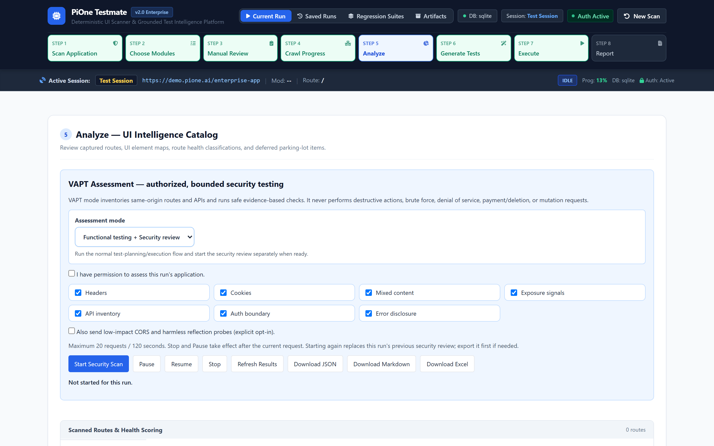
Non-Destructive DAST Security Assessment
Passive OWASP Top 10 vulnerability checks executed safely against the mapped route graph
- ✓Security Headers Audit: Evaluates CSP, HSTS, X-Frame-Options, X-Content-Type-Options.
- ✓Cookie Security Analysis: Flags missing
Secure,HttpOnly, orSameSiteflags. - ✓OWASP 2021 Alignment: Findings mapped to A01 Broken Access, A05 Misconfig, A07 Auth.
- ✓Downloadable Findings: Generates instant compliance JSON reports for DevSecOps pipelines.
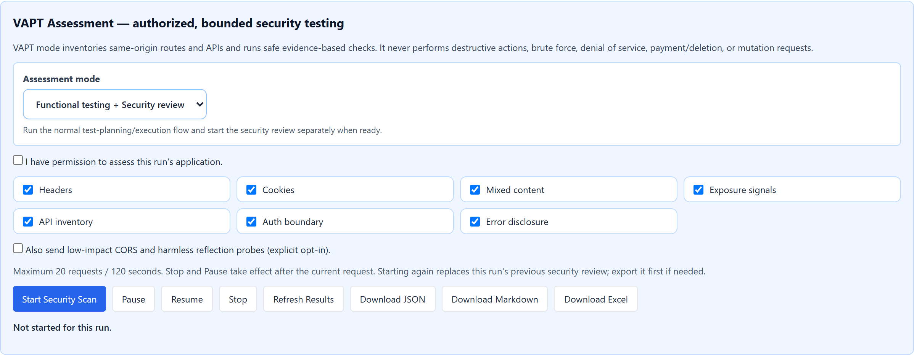
Multi-Provider AI Test Planning Gateway
Vendor-neutral intelligence engine generating robust, deterministic Playwright test suites
- ✓Zero Hallucination Guarantee: Test plans strictly bounded to elements in the discovered DOM graph.
- ✓Deterministic Code Emission: Emits pure Python + Playwright code; no proprietary runtime required.
- ✓Editable Plan Staging: Review, reorder, or add custom test steps before code synthesis.
pytest CLI.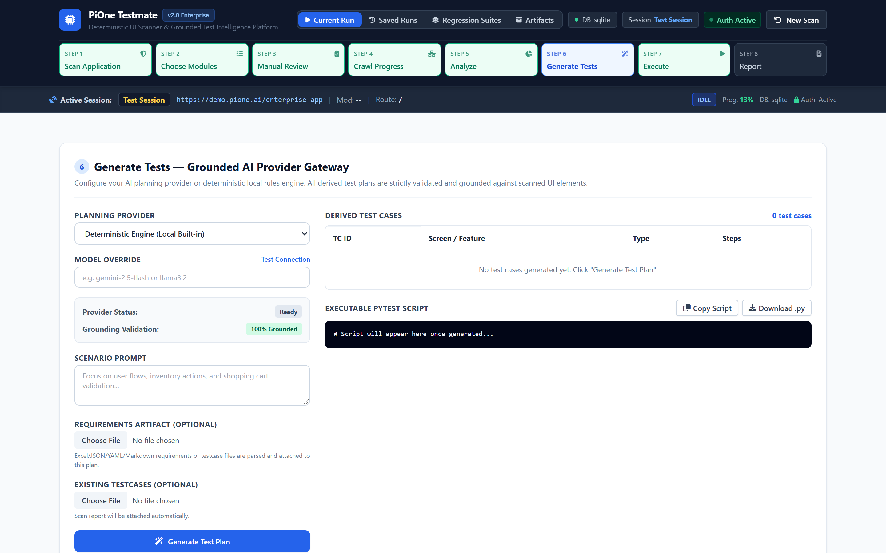
Controlled Execution Engine & Live Step Streaming
High-speed headless or interactive browser runner with sub-millisecond assertion tracing
- ✓Live Step Streaming: Every action, click, navigation, and expectation displayed in real-time.
- ✓Headed / Headless Mode: Toggle headed browser for local visual debugging or headless for speed.
- ✓Stop-on-Failure Protection: Automatically halts test execution upon unexpected application error.
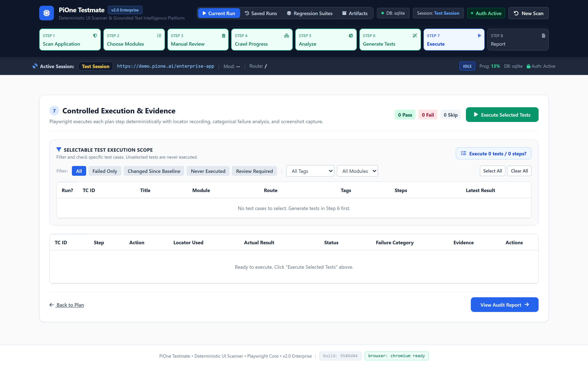
Audit-Ready Test Artifacts & Executive Reporting
Comprehensive dashboards providing immediate pass/fail clarity and compliance export
- ✓Standard JUnit XML & JSON: Ingest test results effortlessly into GitHub Actions, GitLab, or Jenkins.
- ✓Executive HTML Dossier: Standalone report shareable with compliance officers and VP Engineering.
- ✓Traceability Links: Every executed test links back to the original discovered route and element.
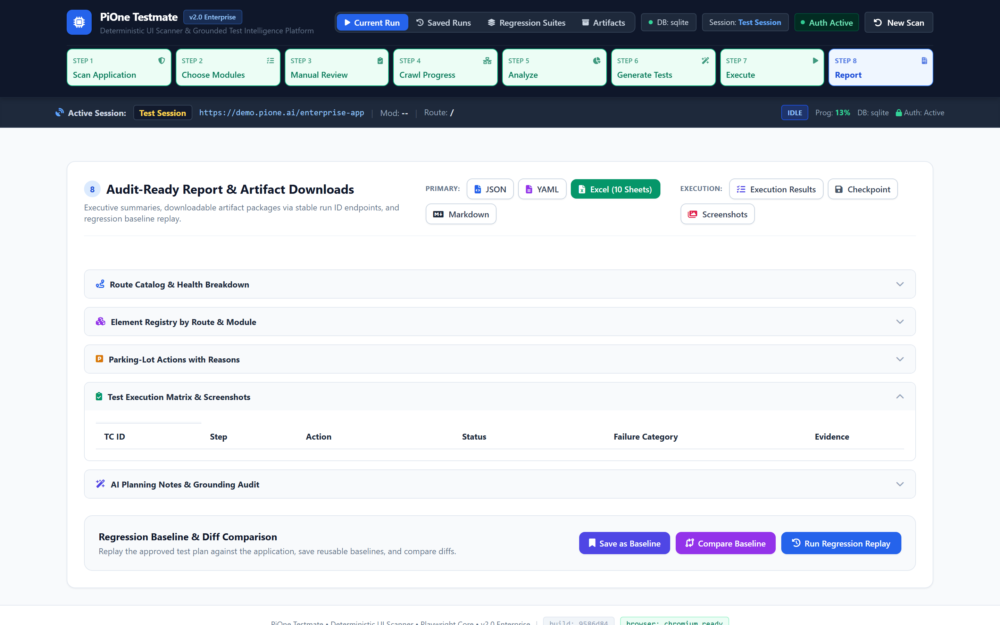
Enterprise State Persistence & Checkpoint Resumption
Transactional recovery engine preventing loss of long-running scan context
- ✓SQLite / PostgreSQL Backend: Battle-tested relational persistence for all runs, routes, and suites.
- ✓One-Click Resume: Re-attaches telemetry socket and restores execution state instantly.
- ✓Safe Destructive Actions: Typed "DELETE" confirmation modal prevents accidental test suite loss.
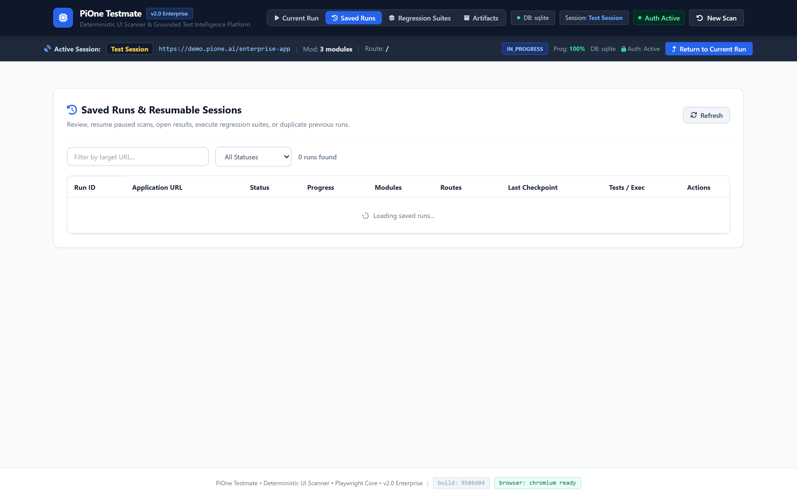
Autonomous Regression Suites & Visual Baselines
Pixel-perfect perceptual diffing and automated multi-run regression bundling
- ✓Golden Baseline Comparison: Detects unintended CSS shifts, font drops, and visual layout breakage.
- ✓Suite Bundling: Group critical path suites (Smoke, P0, Checkout) into single regression runs.
- ✓Historical Drift Analysis: Compare timing, memory footprint, and pass rates across builds.
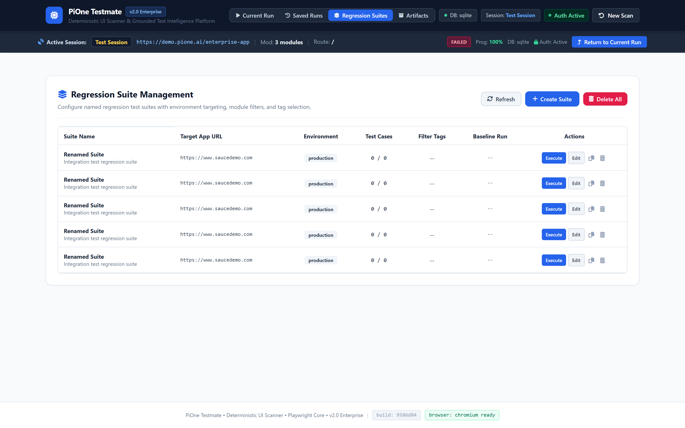
Enterprise Data Architecture & Relational Schema
SQLAlchemy persistence models supporting high-concurrency transactional execution
| Entity Model | Primary Attributes | Relational Mapping | Enterprise Role & Purpose |
|---|---|---|---|
| RunContext | run_id, target_url, status, checkpoint_step, created_at | 1 : N Routes, 1 : N Suites | Top-level scan lifecycle, active module pointers, and checkpoint recovery |
| DiscoveredRoute | route_id, run_id, path, http_status, classification | N : 1 RunContext, 1 : N Elements | Durable catalog of all mapped application pages and HTTP health |
| ElementRegistry | element_id, route_id, role, selector_score, bbox, interactive | N : 1 DiscoveredRoute | 12-attribute self-healing selector registry with bounding coordinates |
| RegressionSuite | suite_id, name, run_id, test_case_count, status | 1 : N TestCases, 1 : 1 Baseline | Named bundle of critical-path test scenarios for CI/CD automation |
| SecurityFinding | finding_id, run_id, owasp_category, severity, url, evidence | N : 1 RunContext | Passive DAST vulnerability audit log with remediation guidance |
| ArtifactReference | artifact_id, run_id, file_type, file_path, size_bytes | N : 1 RunContext | Tracked 10-sheet Excel workbooks, JUnit XML, JSON metrics, and screenshots |
Enterprise Security, Governance & Transport Guardrails
Transport-layer safety controls preventing SSRF, data corruption, and credential leakage
| Security Domain | Identified Threat Vector | PiOne Testmate Transport Guardrail | Compliance Standards |
|---|---|---|---|
| Transport SSRF | Crawlers hitting cloud metadata (169.254.169.254) or VPC internals | Playwright route interception drops non-target and private IP ranges | CWE-918, OWASP A10 |
| Destructive Actions | Accidental deletion of database records or billing transactions | Safety Parking-Lot quarantines verbs (delete, cancel, buy) for human approval | SOC2 CC7.2 |
| Credential Leakage | Passwords or session tokens leaking in logs, reports, or CI artifacts | Encrypted storage under reports/auth_sessions/; regex redaction on all logs | ISO 27001 A.9.4 |
| AI Hallucinations | LLM generating non-existent test steps causing pipeline failures | Prompts strictly bounded to elements in the registered DOM catalog | OWASP LLM09 |
| Session Hijacking | Expired or stale session states invalidating long-running tests | In-place /session/refresh preserves run context without re-authenticating | OWASP A07 |
Competitive Differentiation Matrix
How PiOne Testmate compares against legacy frameworks and black-box AI tools
| Capability / Feature | PiOne Testmate | Selenium / WebDriver | Cypress / Playwright | Black-Box AI Bots |
|---|---|---|---|---|
| Setup Effort | Zero-Script Autonomous | High (Manual Coding) | Medium (Manual Coding) | Zero-Script |
| Selector Maintenance | Self-Healing (12 Attr) | High Maintenance (40% time) | High Maintenance | Brittle / Hallucinates |
| Destructive Action Safety | Safety Parking Lot Gate | None (Blind Execution) | None (Blind Execution) | High Risk of Accidental Delete |
| Security Auditing | Built-in Passive DAST | Requires 3rd-Party Tools | Requires 3rd-Party Tools | None |
| AI Model Portability | Gemini, OpenAI, Claude, Ollama | None | None | Single Vendor Lock-In |
| State Persistence | Relational Checkpoint Resume | None (Restart from zero) | None (Restart from zero) | None |
| Test Code Ownership | Emits Pure Pytest Code | Custom Code | Custom Code | Proprietary Lock-in |
Economic ROI, Deployment Options & Action Plan
Clear financial returns and seamless enterprise deployment roadmap
85% Lower Maintenance
Reclaims hundreds of engineering hours lost to brittle selector updates. Autonomous route discovery adapts dynamically as your UI evolves.
10x Test Velocity
Generate complete, production-grade Playwright suites in minutes rather than weeks. Cut QA release cycles from 3 days to under 30 minutes.
Air-Gapped & Secure
Deploy on-premise, in your private VPC, or fully offline with local LLM inference via Ollama. Zero test data or credentials leave your network perimeter.